Rusia concluyó hoy el rescate en el trágico submarino " Kursk " y dejó en el fondo del mar los cuerpos de 106 de sus tripulantes , dos reactores nucleares y el misterio de por qué naufragó la joya de la Armada.

Pero la incógnita que atormenta a los rusos y tiene perplejos a marinos y científicos de todo el mundo podría despejarse en menos de 24 horas , cuando según está anunciado se divulguen los resultados de la investigación oficial sobre el hundimiento.
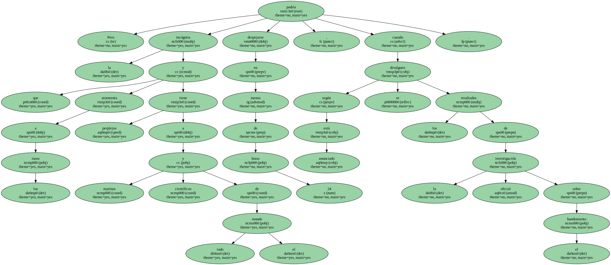El " Kursk " , orgullo de la Flota del Norte , se hundió por causas no aclaradas el pasado 12 de agosto , aunque la versión más verosímil para las autoridades rusas es que el hundimiento se debió a la colisión con un submarino " asesino " extranjero.
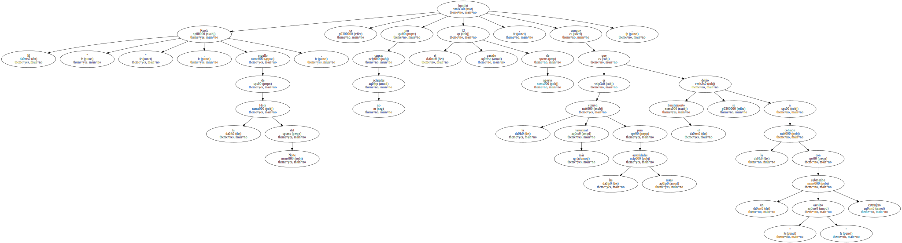" Parece que la operación de rescate toca a su fin " , declaró el almirante Vladímir Kuroyédov , comandante en jefe de la Armada , poco después de que zarpara de vuelta rumbo a Noruega el buque-plataforma " Regalia " , contratada para los trabajos.
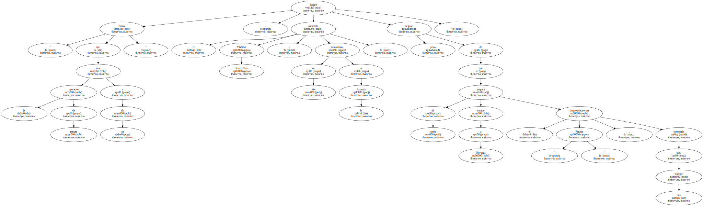Moscú firmó con la filial noruega de la compañía norteamericana Halliburton un contrato de tres semanas que comenzaron el 21 de octubre y debían terminar el próximo Sábado día 11.
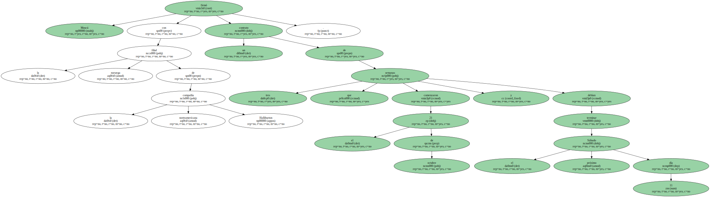Pero portavoces de la Armada dijeron sorprendentemente que el contrato terminó hoy , pese a que los buzos noruegos que trabajaron junto a otros submarinistas rusos se mostraron dispuestos a seguir.

El anticipado fin de la operación se produjo tras 17 días de búsqueda en los que se rescataron los cuerpos de sólo doce de los 118 tripulantes muertos en el naufragio , pero sin encontrar pruebas para confirmar la tesis oficial rusa de la colisión.
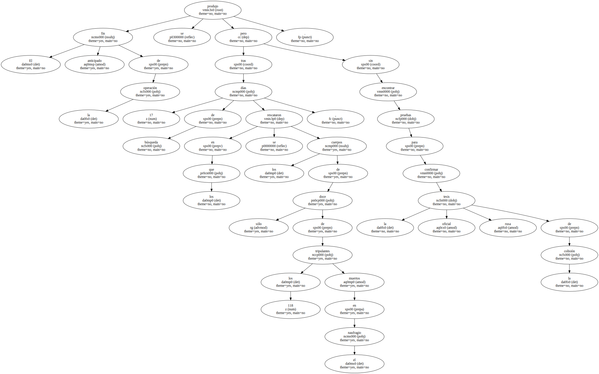Expertos noruegos tacharon hoy de " absurda " la tesis rusa del choque y de un supuesto " acuerdo " entre el presidente norteamericano Bill Clinton y su homólogo ruso , Vladímir Putin , para ocultar las causas hasta después de las elecciones en Estados Unidos.
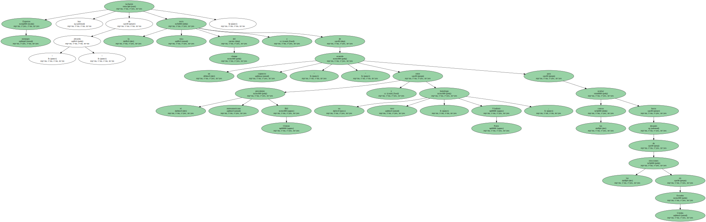Iliá Klebánov , viceprimer ministro y presidente de la comisión , anunció la semana pasada que para mañana miércoles , 8 de noviembre , se conocería con exactitud la auténtica causa de la tragedia , justo horas después de las elecciones presidenciales en EEUU.
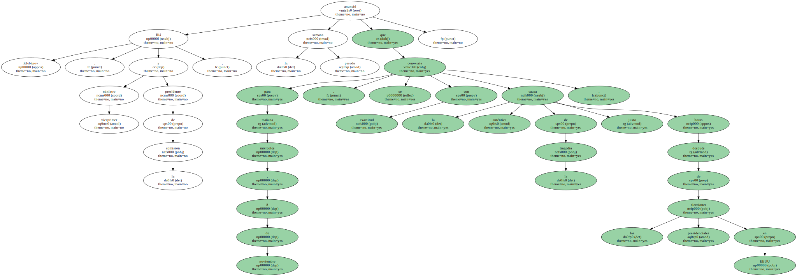Pese a informes sismológicos sobre dos explosiones en el interior del " Kursk " , las autoridades rusas han mantenido firmemente su versión sobre la colisión con un submarino extranjero.
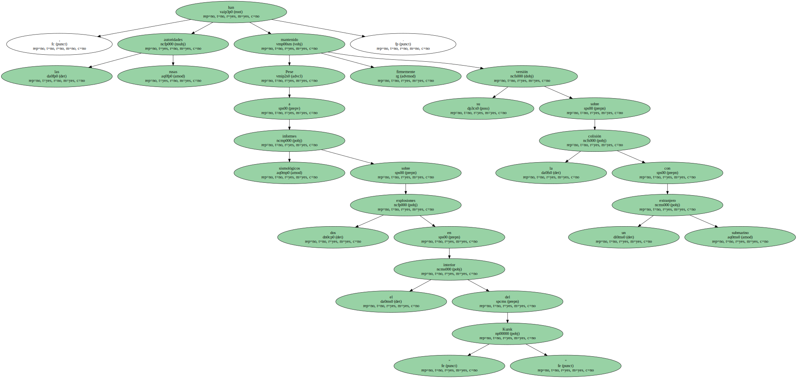Otras fuentes científicas desmintieron de plano la hipótesis , mientras filtraciones oficiosas de fuentes navales informaron de que un misil-torpedo ruso impactó en el " Kursk ".
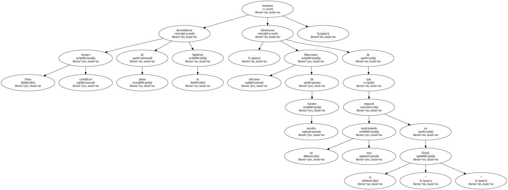El submarino más moderno de la Flota rusa , que participaba en un simulacro bélico el día del naufragio , fue alcanzado por un disparo hecho desde el buque-insignia " Pedro el Grande " , según las fuentes.
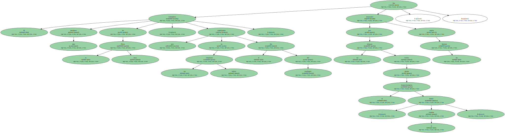Igor Kudrik , especialista de la organización ecologista noruega " Bellona " , citó datos de una investigación del ministerio de Defensa en Oslo que confirmaron la presencia de tres submarinos de la OTAN en " aguas neutrales " el 12 de agosto.
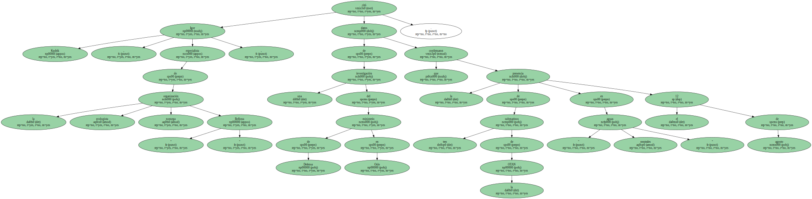El " Memphis " y el " Toledo " , de Estados Unidos , y el " Splendid " , del Reino Unido , seguían a distancia las maniobras navales y no pudieron colisionar con el " Kursk " , según esas informaciones.
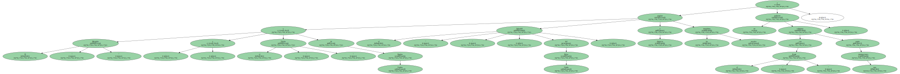Los submarinos de la OTAN y el observatorio sismológico noruego Norsar , detectaron el 12 de agosto dos explosiones consecutivas en la zona del " Kursk " , la segunda de mucha mayor intensidad.
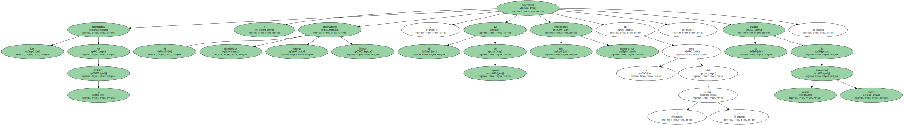Los aparatos de detección no determinaron si hubo impacto con el casco externo o fueron explosiones a bordo , como alegó una de las versiones circuladas.
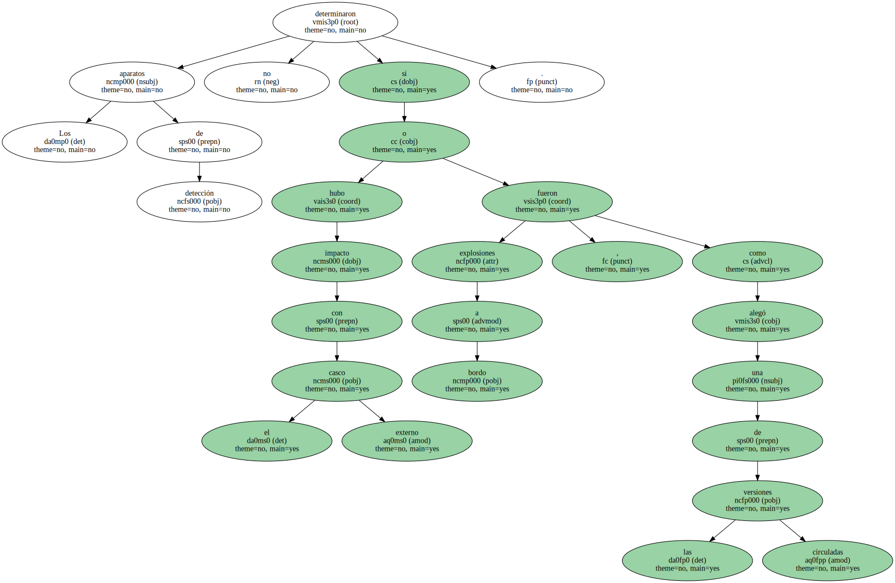De acuerdo con esa hipótesis , la explosión fortuita de un torpedo de nueva generación , bautizado con el nombre de " Shkvual " y capaz de alcanzar 360 kilómetros , fue lo que echó a pique al " Kursk ".
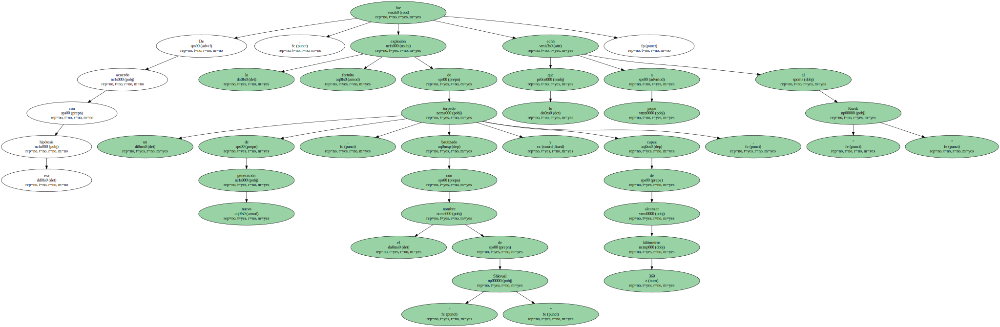Aparte de la colisión y del impacto de un torpedo , la comisión ha investigado hasta quince posibles causas de la catástrofe , incluido un posible sabotaje a bordo.
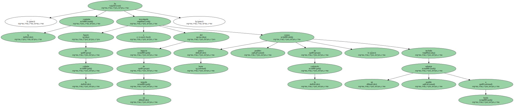La Armada y el Servicio Federal de Seguridad ( FSB , antiguo KGB ) abrieron un expediente sobre una presunta " huella chechena " en el hundimiento del submarino nuclear , pero los posibles resultados de la investigación no se hicieron públicos.
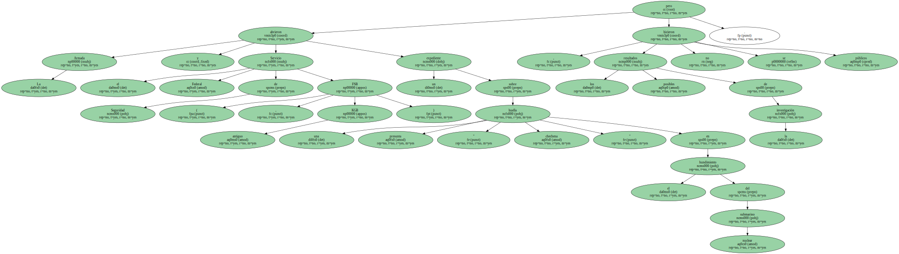Los militantes islámicos que combaten desde hace 15 meses contra las tropas rusas en la república separatista se atribuyeron en su día un acto suicida a cargo de un musulmán originario de la región de Daguestán , vecina de Chechenia.
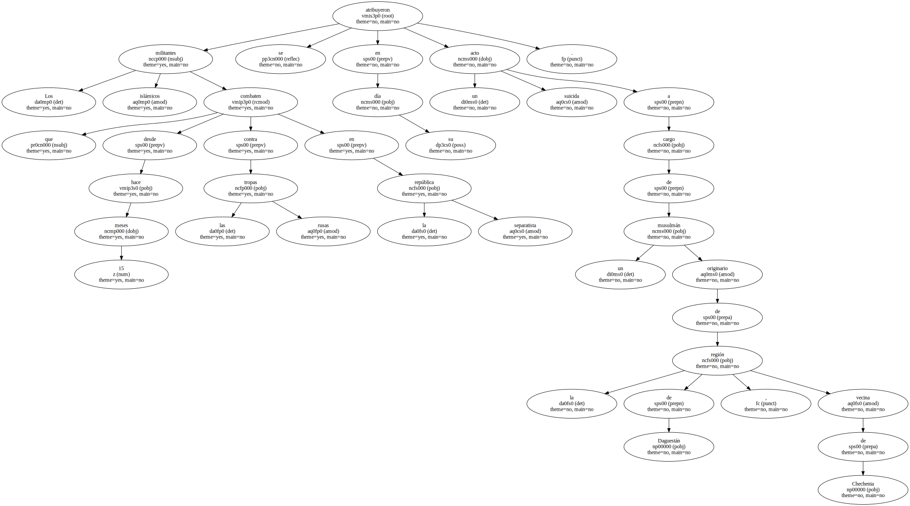De acuerdo con la lista de la dotación del " Kursk " , entre los 118 tripulantes había al menos nueve musulmanes , tres de ellos oriundos de Daguestán.
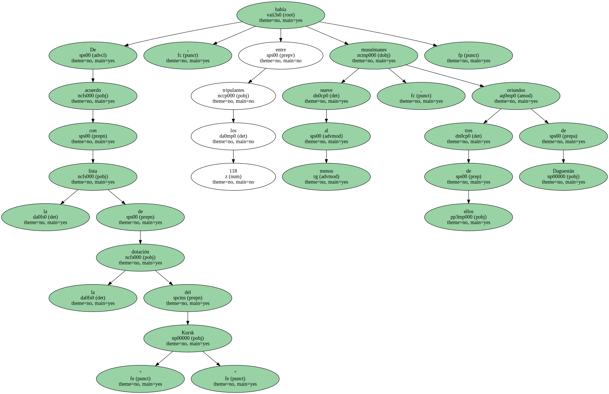